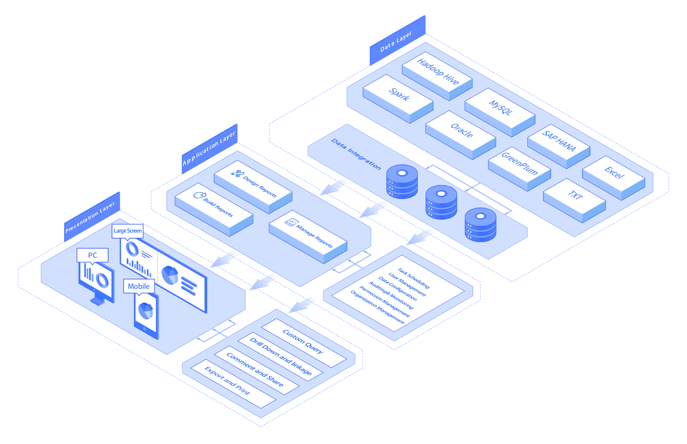
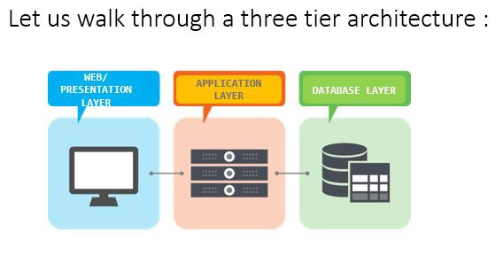

What is Web Application Architecture?
Web Aplication Architecture is described as a precedent of interactions between the web application components. The performance, resilience, and security all depend on how this interaction was planned; this effects the future web application (Yaskevich, 2017). A web application (or WebApp), unlike standalone application, is a program that runs over the Internet.Server-side customizations are normally done using the ASP.Net server-side code, it then uses .Net Framework and references SharePoint server’s object model in order to access data and proceed to build business logic. Programming languages like C# and VB.net are used for server-side (Mishra, 2017).
Client-side scripts are already embedded on a client’s web page as well as being already processed on the client’s web browser. This type of scripts are normally written in a scripting language like JavaScript then interacts with the page’s HTML elements (Mishra, 2017)
3-Tier Architecture

3-Tier (A 3-tier architecture is a type of software architecture which is composed of three “tiers” or “layers” of logical computing.) architecture comprises five components:
- HTTP Server: E.g., Apache HTTP Server, Apache Tomcat Server, Microsoft Internet Information Server (IIS), Google Web Server (GWS), etc.
- HTTP Client (or Web Browser): e.g., Internet Explorer (MSIE), Firefox, Chrome, Safari, etc.
- Database: e.g., MySQL, SQLite, OpenOffice's Base, Oracle, IBM DB2, SAP Sybase, MS SQL Server, MS Access, etc.
- Client-Side Programs: could be written in HTML Form, JavaScript, etc. You will learn how to writer client-side programs using HTML and CSS
- Server-Side Programs: could be written in Java Servlet/JSP, ASP, PHP, Perl, Python, CGI, and others.
What takes place in the Web Application Architecture:

- The end-user utilizes the program or the interface of the application and sends the solicitation to the expert through the Internet.
- The web expert sends the solicitation to the referred to worker.
- The web expert sends the solicitation to the referred to worker.
- The referred to expert discovers the outcomes for the provided orders.
- The prepared data is given to the web application which sends it to the webserver.
- The web expert gives the referred to information to the user.